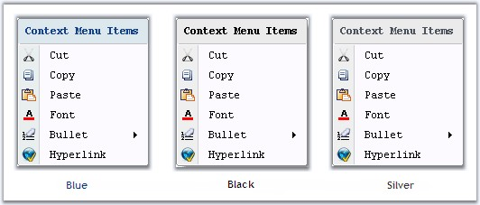
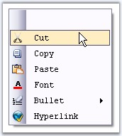

Office12ToolStripRenderer Class
Using the Office12ToolStripRenderer Class, the appearance of the ContextMenuStripEx can be changed.
Use the below code snippet for implementing this feature.
|
[C#]
private Syncfusion.Windows.Forms.Tools.Office12ColorTable ct; private Syncfusion.Windows.Forms.Tools.Office12ToolStripRenderer m_Office12Renderer; ct =new Syncfusion.Windows.Forms.Tools.Office12ColorTable(); ct.UseSystemColors = false; m_Office12Renderer = new Syncfusion.Windows.Forms.Tools.Office12ToolStripRenderer(ct); |
|
[VB.NET]
Private ct As Syncfusion.Windows.Forms.Tools.Office12ColorTable Private m_Office12Renderer As Syncfusion.Windows.Forms.Tools.Office12ToolStripRenderer ct = New Syncfusion.Windows.Forms.Tools.Office12ColorTable ct.UseSystemColors = False m_Office12Renderer = New Syncfusion.Windows.Forms.Tools.Office12ToolStripRenderer(ct) |
In the form load event, add one of the below code to change the appearance.
|
[C#]
//Sets Office Black Color this.contextMenuStripEx1.Renderer = new Office12ToolStripRenderer(new OfficeBlack ()); //Sets Office Blue Color this.contextMenuStripEx1.Renderer = new Office12ToolStripRenderer(new OfficeBlue ()); //Sets Office Silver Color this.contextMenuStripEx1.Renderer = new Office12ToolStripRenderer(new Office12ColorTable()); |
|
[VB.NET]
'Sets Office Black Color Me.contextMenuStripEx1.Renderer = New Office12ToolStripRenderer(New OfficeBlack) 'Sets Office Blue Color Me.contextMenuStripEx1.Renderer = New Office12ToolStripRenderer(New OfficeBlue) 'Sets Office Silver Color Me.contextMenuStripEx1.Renderer = New Office12ToolStripRenderer(New Office12ColorTable()) |

Figure 1424: OfficeColor applied for Context Menu
Rendering Mode
Rendering mode of the ContextMenuStripEx can be controlled using the below property.
|
Property |
Description |
|
RenderMode |
Represents the painting style applied to the control. The different styles supported are,
· Professional, · System and · ManagerRenderMode. |
|
[C#]
this.contextMenuStripEx1.RenderMode = System.Windows.Forms.ToolStripRenderMode.Professional; |
|
[VB.NET]
Me.contextMenuStripEx1.RenderMode = System.Windows.Forms.ToolStripRenderMode.Professional |

Figure 1425: RenderMode = "Professional"